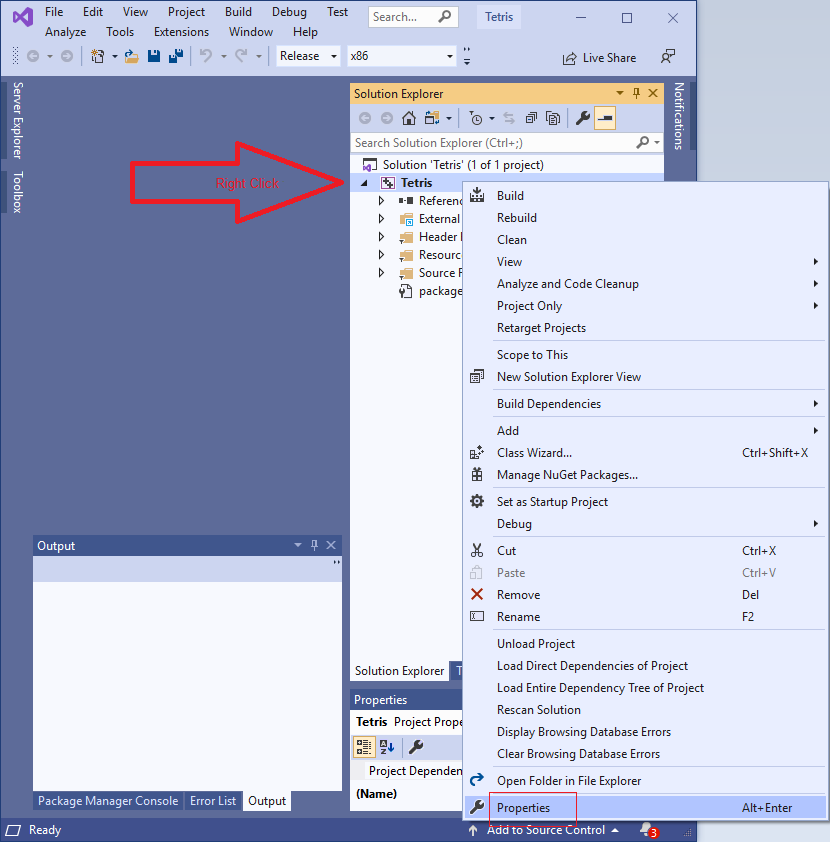
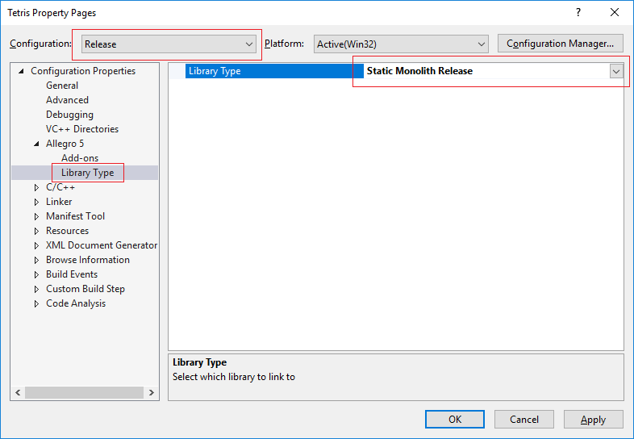
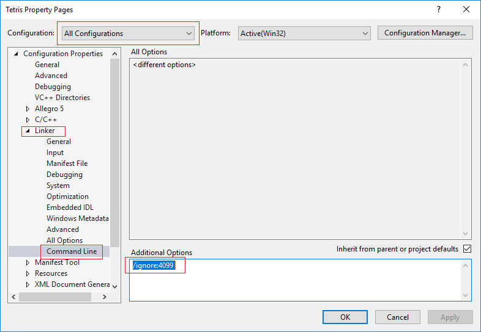
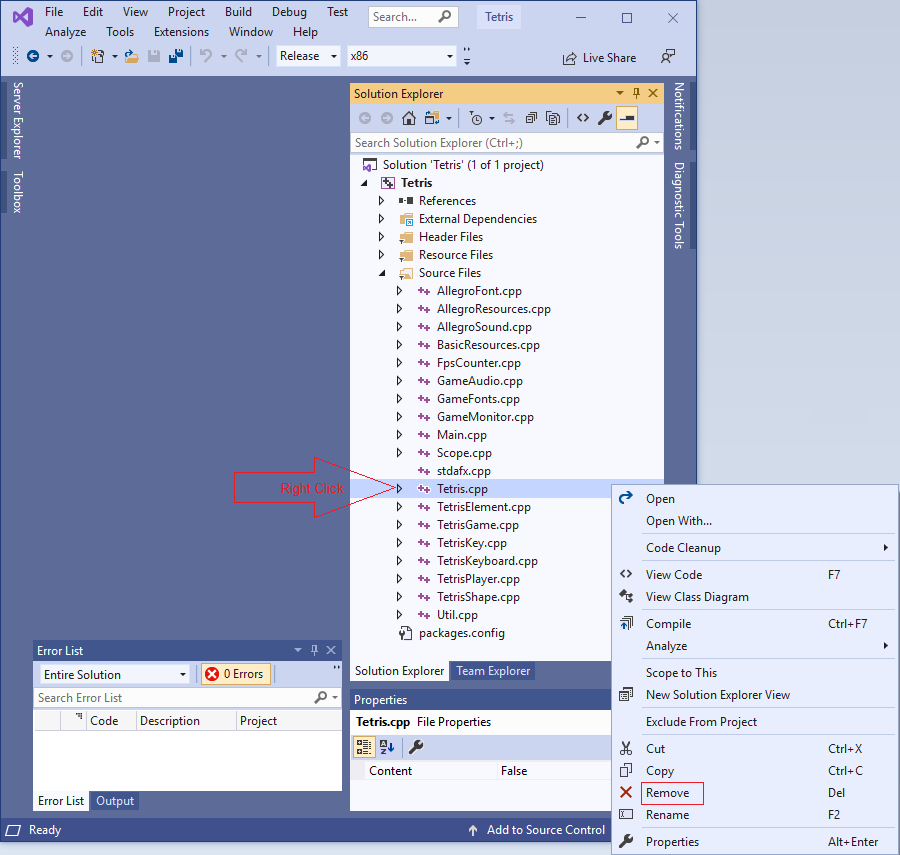

Create the Projct
Start Visual Studio and create a new project.

Select C++ and select Windows Desktop Application.

Name the project.

Create the project.

Confirm any prompt that appears.
The folder named source contains the source code.
The game is written in C++ and uses Allegro 5.
We use Visual Studio 2019 to complie and run the program.
When we use the term Allegro we mean Allegro 5.
Start Visual Studio and create a new project.
Select C++ and select Windows Desktop Application.
Name the project.
Create the project.
Confirm any prompt that appears.
Start the NuGet package manager.

Click Browse when NuGet has opened.

Type allegro in the search field then select "Allegro by Allegro Developers v5", mark the checkbox and click install.

Installing allegro may take some time. You might be asked to confirm the installation.

Wait until the installation process finishes as shown in the output window.
View the properties of the project by right clicking it
Select "All Configurations" in the top left corner and click "Allegro 5" then click "Add-ons". Then add the features of allegro that we intend to use.

Select "Release" in the top left corner and click "Allegro 5" then click "Library Type". Let the release version be a single executable.
Optionally configure the Debug version by selecting "Debug" instead of "Release".
You might also want to disable the linker warning about missing .pdb files
You can use the command line to copy the source files to the project folder or the guide below.
Open File Explorer and navigate to the source folder and copy all the files in it.

Then close the File Explorer.
Right click the project and select 'Open Folder in File Explorer'.

It should look like this.

Then paste the source files with Ctrl-V and overwrite existing files.

Confirm if Visual Studio asks you to reload any files.
Then close the File Explorer.
Select 'Project -> Add Existing Item' and add the files we just pasted.

Here you can see the files to avoid.

Delete the file Tetris.cpp from the project by right clicking it.
The project should now compile.
Press F5 to build and run the game.

General key bindings.
Player 1 key bindings.
Player 2 key bindings.
The game needs better keyboard handling, ie keyboard strokes should be stored in a queue with all SHIFT info.
Rotation needs to be made less strict and refactored with they keyboard code.
The screen should shake proportionaly to the amount of rows popped.
Maybe enable dropping of 1x1 piece of debris on the opponents screen, that cant be moved, if you clear rows twice in a row.
Maybe a 1x1 piece can begin to grow, and pop of the player drops a piece on it before it is fully grown.
Create a version that uses windows native sounds only.